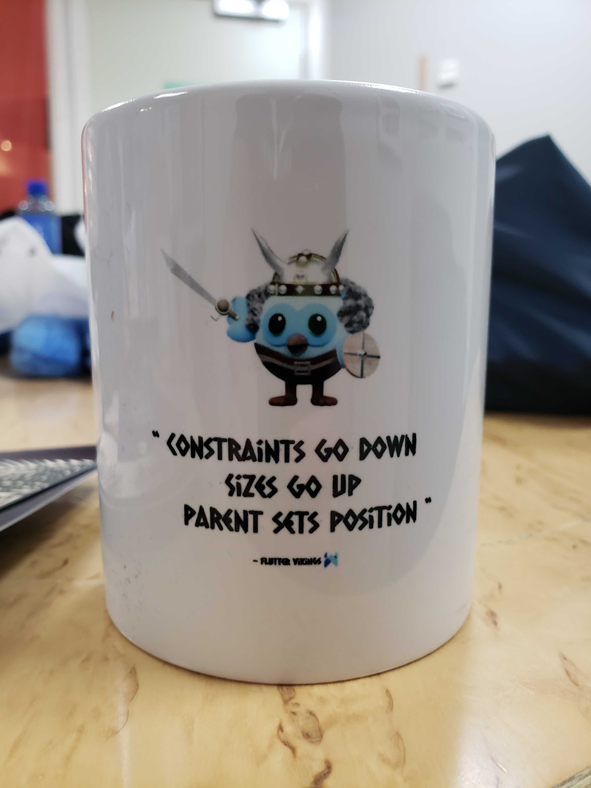

Marcelo Glasberg
Senior Software Engineer.
Fluent English and Portuguese. Good Spanish. Bad French.
I hold both European (Polish) and Brazilian passports.
I have been programming since I was 10 years old.
Love travelling, astronomy, science, games and AI art.
Professional
Please see my LinkedIn.
I've created and launched the mobile apps for American startups such as Parkside, Kalshi and Pid,
for both iOS and Android. I have also lots of experience with web and backend.
Academic
I graduated from ITA, the very top engineering university in Brazil, founded by MIT professors.
- Aeronautical-Mechanical Engineer —
Technological Institute of Aeronautics (ITA), São Paulo,
Brazil
- MBA —
Management and Administration Institute (IAG) of the PUC-RJ University, Rio de Janeiro, Brazil
Technologies
- Dart/Flutter (Android and iOS mobile apps. Desktop apps)
- Android native in Java/Kotlin. iOS native in Swift. (Frontend)
- AppStore and Google Play. Approving and launching apps
- JavaScript/Typescript. HTML/CSS. jQuery. React.js. Web apps. SPA. (Frontend)
- Java, Hibernate/JPA, JUnit, Mockito (Backend)
- Python, C++ (past experience)
- SQL, MySQL, PostgreSQL, NoSQL
- Analytics. A/B testing. Performance monitoring and error tracking
- UI/UX. HCI and UX research. Figma. Affinity Photo. Design language. Experience with rtl languages
- Amazon Lambda, S3, DynamoDB, IAM, Cognito
- Google Firebase, Cloud Firestore, Google Cloud Storage, Cloud Functions, PubSub, BigQuery
- REST, GraphQL, gRPC. API design / Networking
- Clean Code. Testable code. Quality. SOLID. Design Patterns
- TDD (Test Driven Development), Unit testing, Integration testing
- BDD (Behavior-Driven Development), Technical debt management
- Back-end simulation for integration tests
- Agile. Kanban. CI/CD. Git, GitHub. Jira
- Software architecture. System design. Documentation
- Cryptography. Immutable data structures
- Performance optimization and reliability
- Debugging and Profiling
- Online payments. Fintech. Stock market. Cryptocurrencies
- Localization and internationalization
- Plugin development for the IntelliJ IDE
- AI and prompt engineering
- Mentoring/Coaching. Remote teams
- Excellent communication skills and technical writing
My Code
Open Source Projects
Despite a significant portion of my coding projects being proprietary, there's an extensive body of
my work that is open source. This collection, spanning a broad spectrum of topics, testifies to my
versatile software development expertise. It includes widget creation, UI/UX design, immutable
data structures, state management, and theming (colors and fonts), memory management, image
processing, mathematics, testing frameworks, translation and internationalization, animation,
networking, cryptography, payments, and plugin development.
- Java:
- Dart:
- Flutter state management:
- Flutter internationalization and localization:
- Flutter widgets and UI/UX:
- Artificial Intelligence:
- I am currently developing a mobile/desktop app that allows you to add your own
documents locally, providing context for your GPT-based queries, and then automates
some types of queries.
My Patents
I am the sole inventor of the following patents, and I filed them
myself in
the USPTO.
Articles
I sometimes create an open source project to solve a hard problem and then write an article about it
on Medium. Here are some of my articles:
-
Flutter: The Advanced Layout Rule Even Beginners Must Know
-
Async Redux: Flutter’s non-boilerplate version of Redux
-
i18n? Mind-blowing Easy Translations and Internationalization for Flutter
-
Announcing FIC: Fast Immutable Collections
-
The New Way to create Themes in your Flutter App
My article about Flutter layout rules has become the de-facto go-to reference about layout, for
Flutter developers. I was then asked by Google to let them publish it in their
official documentation.
The article's catchphrase, “Constraints go down, Sizes go up, Parent sets position”
become somewhat of a mantra for some, and has been featured on mugs sold at Flutter conventions.

Contact